Gitlab 安装
Gitlab 下载：
先下载安装包
下载地址：
- https://docs.gitlab.com/ee/install/requirements.html #安装依赖
- https://packages.gitlab.com/gitlab/gitlab-ce #官方下载地址
- https://mirrors.tuna.tsinghua.edu.cn/gitlab-ce/ #清华大学镜像源
查看系统版本
$ lsb_release -a
No LSB modules are available.
Distributor ID: Ubuntu
Description: Ubuntu 22.04.2 LTS
Release: 22.04
Codename: jammy
Gitlab 安装：
如果想要挂NAS或者NFS，可以提前挂到/opt/gitlab/目录下
# dpkg -i gitlab-ce_15.4.3-ce.0_amd64.deb # 需要自行替换为下载的版本
# vim /etc/gitlab/gitlab.rb
# grep -v "#" /etc/gitlab/gitlab.rb | grep -v "^$" #验证配置文件
external_url 'http://192.168.0.199' #一定要写'http'
gitlab_rails['smtp_enable'] = true
gitlab_rails['smtp_address'] = "smtp.qq.com"
gitlab_rails['smtp_port'] = 465
gitlab_rails['smtp_user_name'] = "******@qq.com"
gitlab_rails['smtp_password'] = "********" #SMTP授权码
gitlab_rails['smtp_domain'] = "qq.com"
gitlab_rails['smtp_authentication'] = :login
gitlab_rails['smtp_enable_starttls_auto'] = false
gitlab_rails['smtp_tls'] = true
gitlab_rails['gitlab_email_from'] = "******@qq.com"
user["git_user_email"] = "******@qq.com"
# gitlab-ctl reconfigure #重新配置服务，每次更新都要重新执行，第一次会比较慢
完成会提示
gitlab Reconfigured!
浏览器打开：192.168.0.199（端口默认80）
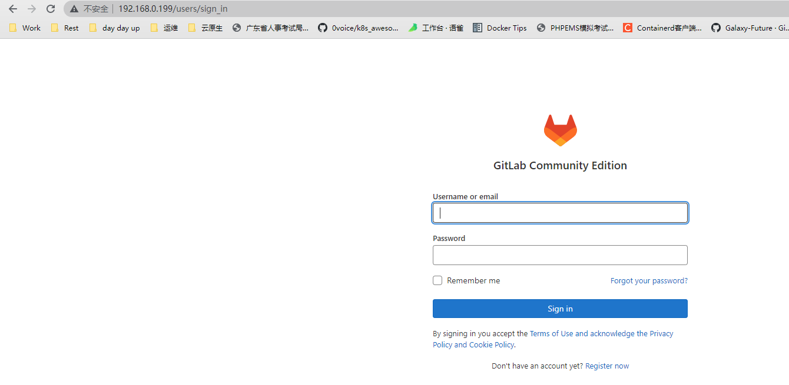
第一次打开会提示登录，账号 root，密码为安装过程随机生成
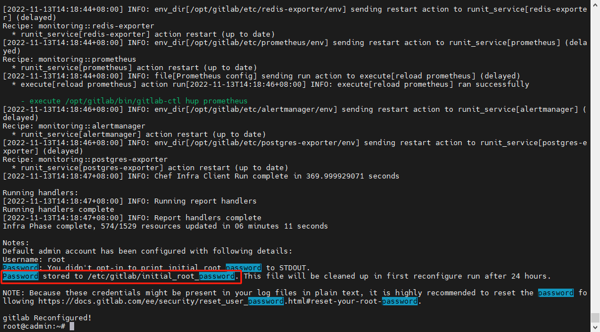
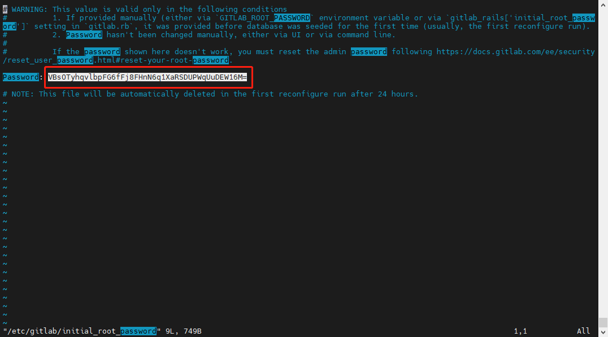
简单配置
汉化
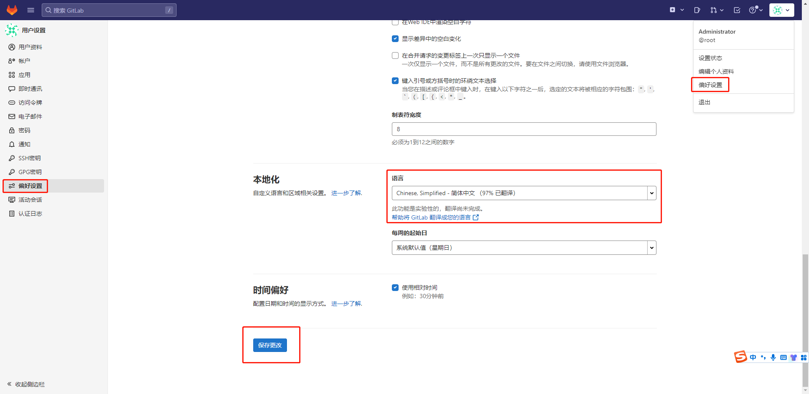
修改密码
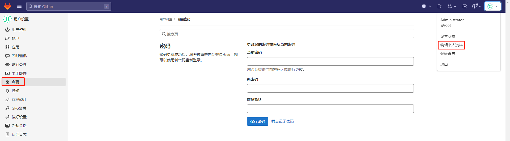
配置root用户的电子邮箱
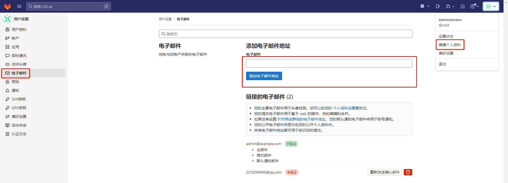
邮箱会收到一条提示邮件
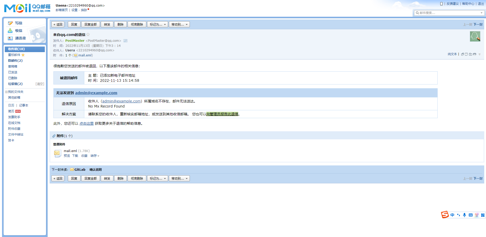
提示退信的原因为，需要确认
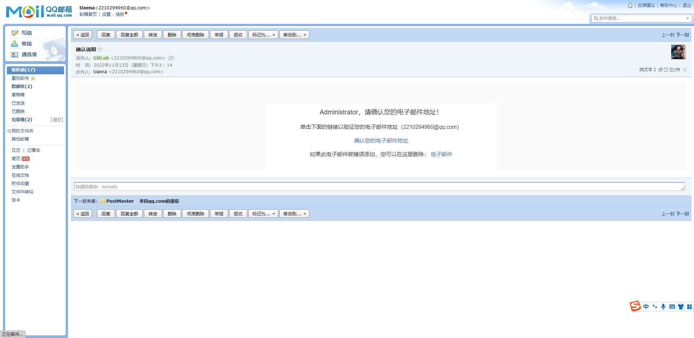
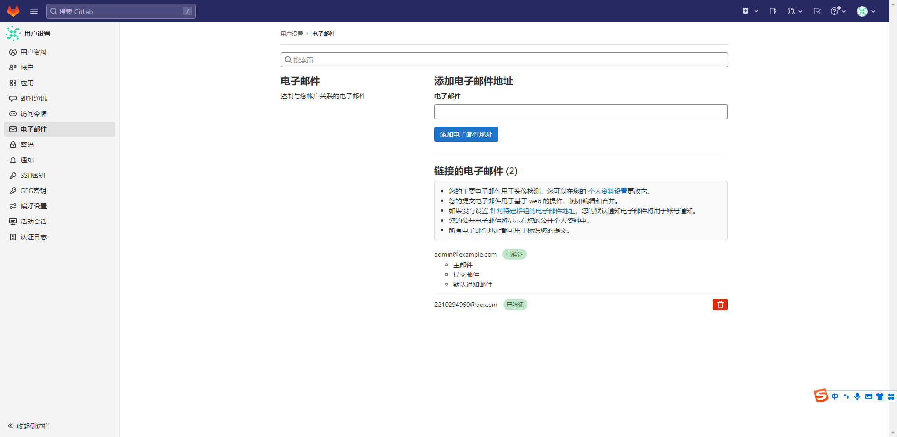
选择接收通知的邮箱地址
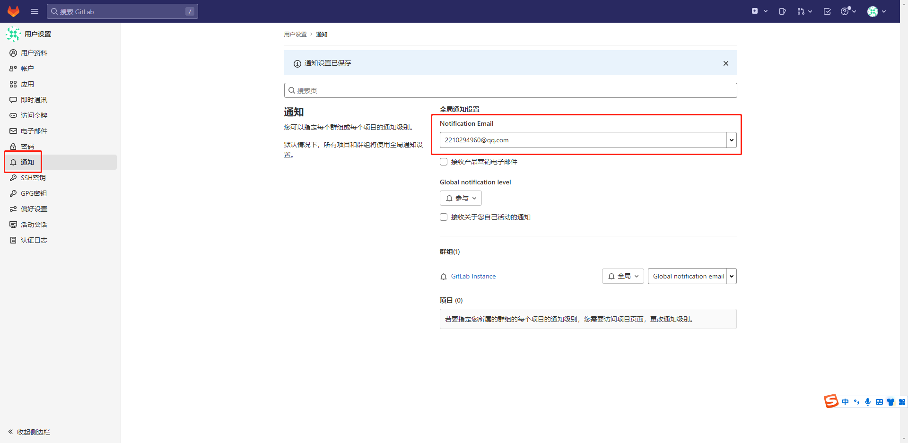
关闭注册功能
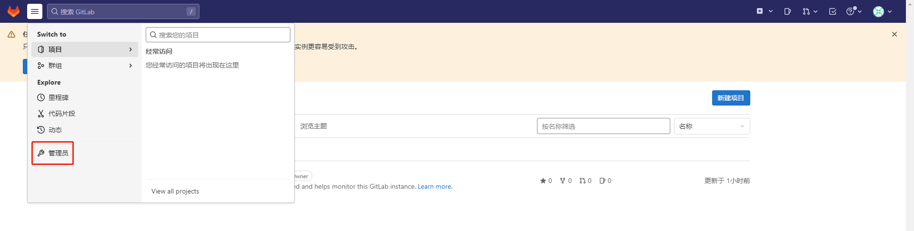
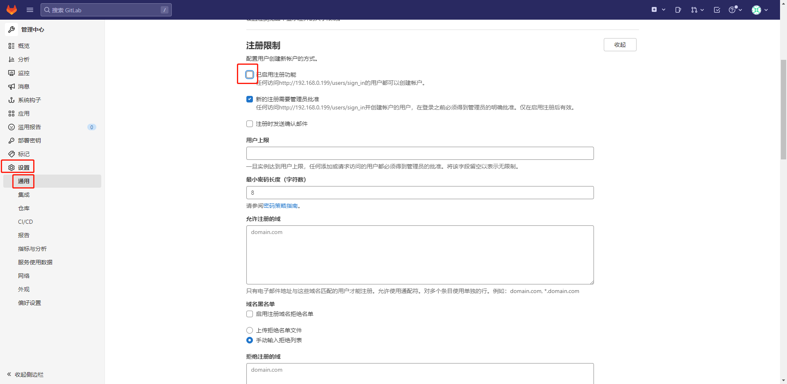
关闭之后注意要保存
Gitlab 升级
注意：每次要升级到当前大版本的最新版本，再跨大版本升级。
- 备份数据
- 下载deb包
- sudo dpkg -i gitlab**.deb 安装包
- sudo gitlab-ctl reconfigure
- sudo gitlab-ctl restart
- 多次重复上面3-5点，升级到自己想要的高版本
Gitlab 项目与账户权限:
-
账户权限分类：
- Guest-访客，可以创建issue、发表评论，不能读写版本库
- Reporter-Git 项目测试人员，可以克隆代码，不能提交，QA、PM可以赋予这个权限
- Developer-Git 项目开发人员，可以克隆代码、开发、提交、push，RD(Research and Development engineer,研发工程师)可以赋予此权限
- Master-Git项目管理员，可以创建项目、添加tag、保护分支、添加项目成员、编辑项目，核心RD负责人可以赋予此权限
- Owner-Git系统管理员即Administrator，可以设置项目访问权限、删除项目、迁移项目、管理组成员，研发组leader可以赋予此权限（权限最高）
-
项目权限分类：
- Private：私有项目、只有组内成员才能看到
- Internal：内部项目、只要 登录的用户就能看到
- Public：公开项目、所有人都能看到
Gitlab 基础管理：
-
安装目录：
- /etc/gitlab #配置文件目录
- /run/gitlab #运行pid目录
- /opt/gitlab #安装目录
- /var/opt/gitlab #数据目录
- /var/log/gitlab #日志目录
-
关闭账户注册
-
创建group，对应于公司的项目
-
创建用户
-
创建project
-
对用户授权project权限
-
测试用户clone与push权限
创建 group
创建用户
填写完后记得创建
修改用户密码为 12345678
新建空白项目
Gitlab 基础管理：
gitlab-rake #数据备份恢复等数据操作
gitlab-ctl #客户端命令行操作行
gitlab-ctl stop #停止gitlab
gitlab-ctl start #启动gitlab
gitlab-ctl restar #重启gitlab
gitlab-ctl status #查看组件运行状态
gitlab-ctl tail nginx #查看某个组件的日志
Gitlab 工作流程：
- 工作区：clone到本地办公PC的代码或者开发自己编写的代码文件所在的目录，通常是编写的代码所在的目录名称。
- 暂存区：用于存储在工作区中对代码进行修改后的文件所保存的地方，使用git add命令添加。
- 本地仓库：用于提交存储在工作区和暂存区中改过的文件地方，使用git commit 命令提交。
- 远程仓库：多个开发共同协作提交代码的仓库，即gitlab服务器。
Gitlab 授权管理
授权之后使用 git clone 提示
root@cadmin:~# git clone http://192.168.0.199/ketitx/app1.git
Cloning into 'app1'...
Username for 'http://192.168.0.199': user2
Password for 'http://user2@192.168.0.199':
remote: HTTP Basic: Access denied. The provided password or token is incorrect or your account has 2FA enabled and you must use a personal access token instead of a password. See http://192.168.0.199/help/topics/git/troubleshooting_git#error-on-git-fetch-http-basic-access-denied
fatal: Authentication failed for 'http://192.168.0.199/ketitx/app1.git/'
root@cadmin:~#
原因：用户创建后，没有登陆过，也没有修改密码
解决方法：登录该用户，第一次登录会提示更换密码，设置新密码即可（可以与原密码相同）
对代码进行编辑
分支：现在的 main == 之前的 master
Gitlab 分支合并:
创建用户user1
创建用户user2
使用user1创建develop分支并进行代码提交
使用user1申请分支develop合并至main分支，并指派给user2
使用user2批准代码合并
验证代码合并
WebHook
系统钩子